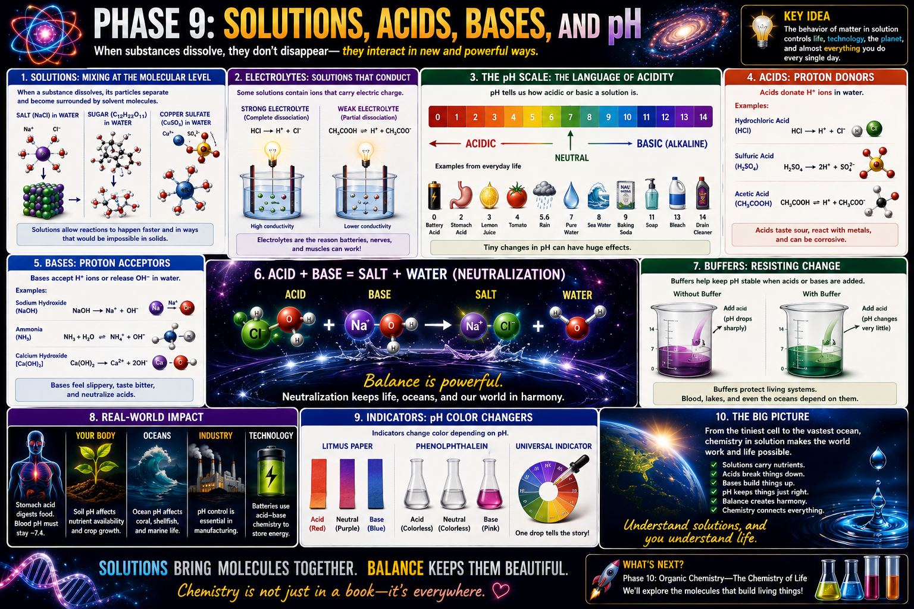

The material being dissolved
Salt, sugar, and copper sulfate can all act as solutes. Their particles separate to different degrees depending on their chemical structure.
Chemistry · Solutions · Acids · Bases · pH
A lesson for Klins on what happens when substances dissolve, why some solutions conduct electricity, how acids and bases behave, and why pH balance matters in batteries, biology, water, cleaning, and technology.

Dissolving separates particles and distributes them through a solvent.
Salt, sugar, and copper sulfate can all act as solutes. Their particles separate to different degrees depending on their chemical structure.
Water is a common solvent because its polar molecules can surround many ions and polar molecules.
In a solution, dissolved particles are spread evenly enough that the mixture appears uniform.
A sugar crystal vanishes from sight, but its molecules are still present. They have separated from the crystal and become surrounded by water molecules. Dissolving changes distribution, not existence.
Mobile ions allow electrical charge to move through a liquid.
A strong electrolyte separates almost completely into ions. Hydrochloric acid and many soluble salts produce many mobile charge carriers.
A weak electrolyte ionizes only partially, so fewer charged particles are available to carry current.
Sugar dissolves as neutral molecules rather than ions, so sugar water conducts poorly compared with salt water.
pH describes hydrogen-ion activity and tells us how acidic or basic a solution is.
Acidic solutions have greater hydrogen-ion activity. Battery acid, stomach acid, lemon juice, and tomato juice are examples.
Pure water is approximately neutral under ordinary conditions.
Basic or alkaline solutions have lower hydrogen-ion activity and often contain or generate hydroxide ions.
The pH scale is logarithmic. A change of one pH unit represents roughly a tenfold change in hydrogen-ion activity. A small numerical change can therefore represent a major chemical difference.
Acids increase hydrogen-ion activity in water.
HCl is a strong acid that separates extensively into hydrogen and chloride ions.
Sulfuric acid can donate two protons and is widely used in industry and lead-acid batteries.
Acetic acid is weak and only partially ionizes in water. It is the characteristic acid in vinegar.
Bases accept hydrogen ions or increase hydroxide-ion concentration.
NaOH separates into sodium and hydroxide ions and is strongly basic.
Ammonia accepts a proton from water, producing ammonium and hydroxide ions.
Calcium hydroxide releases hydroxide ions and is used in construction, water treatment, and soil adjustment.
An acid and a base can react to form water and a salt.
Hydrogen ions from the acid combine with hydroxide ions from the base to form water.
Other ions remain and form a salt. For hydrochloric acid and sodium hydroxide, the salt is sodium chloride.
Buffers help keep pH within a limited range.
Adding a small amount of acid or base can cause a sharp pH change.
Buffer components absorb added acid or base, reducing the size of the pH shift.
Blood, cells, lakes, and oceans rely on buffering systems because many processes work only within a narrow pH range.
Indicators change color in response to acidity or basicity.
Red and blue litmus provide a quick acid-or-base test.
Phenolphthalein is colorless in acidic and neutral conditions and pink in sufficiently basic solution.
A blended indicator produces a range of colors across the pH scale.
Solutions and pH control systems throughout life and technology.
Stomach acid aids digestion, while blood is tightly buffered near pH 7.4.
Soil pH affects nutrient availability and plant growth.
Ocean pH affects corals, shell-forming organisms, and marine chemistry.
Manufacturing, plating, food production, and water treatment require pH control.
Electrolytes carry ions and enable electrochemical reactions.
Acidic and basic cleaners attack different soils and mineral deposits.
Etching, plating, battery chemistry, and semiconductor processing all use controlled solutions.
pH affects corrosion, disinfection, taste, and treatment performance.
A sequence for reading solution chemistry clearly.
Determine what is dissolved and what does the dissolving.
Predict whether the solution will conduct electricity strongly, weakly, or hardly at all.
Classify the solution as acidic, neutral, or basic.
Ask whether the substance donates H⁺, accepts H⁺, or releases OH⁻.
Combine acid and base components and identify the resulting salt and water.
Relate solution chemistry to batteries, cleaning, biology, corrosion, agriculture, or water treatment.
Solution chemistry is the chemistry of interaction. Once particles are mobile in a solvent, they can carry charge, exchange protons, react efficiently, and influence entire systems. That is why pH and electrolytes matter from a single cell to an ocean.